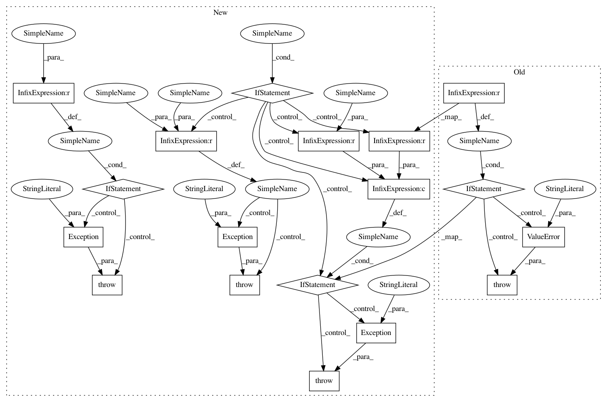

61cd924c2cc08546e66df309085a1c1714199a65,theano/tensor/signal/pool.py,Pool,out_shape,#Any#Any#Any#Any#Any#Any#Any#Any#Any#,229
Before Change
"Pool padding parameter is deprecated, please use pad",
stacklevel=2)
pad = padding
if ws is None:
raise ValueError("Pool ws parameter can not be None")
if ndim is None:
ndim = 2
assert ndim > 0
if len(imgshape) < ndim:
After Change
// check for deprecated parameter names
if ds is not None:
if ws is not None:
raise Exception(
"You can"t provide a tuple value to both "ws" and "ds"."
" Please provide a value only to "ws"."
)
else:
warnings.warn(
"DEPRECATION: the "ds" parameter is not going to exist"
" anymore as it is going to be replaced by the parameter"
" "ws".",
stacklevel=2
)
ws = ds
elif ds is None and ws is None:
raise Exception(
"You must provide a tuple value for the window size."
)
if st is not None:
if stride is not None:
raise Exception(
"You can"t provide a tuple value to both "st and "stride"."
" Please provide a value only to "stride"."
)
else:
warnings.warn(
"DEPRECATION: the "st" parameter is not going to exist"
" anymore as it is going to be replaced by the parameter"
" "stride".",
stacklevel=2
)
stride = st
if padding is not None:
if pad is not None:
raise Exception(
"You can"t provide a tuple value to both "padding" and pad."
" Please provide a value only to pad."
)
else:
warnings.warn(
"DEPRECATION: the "padding" parameter is not going to"
" exist anymore as it is going to be replaced by the"
" parameter "pad".",
stacklevel=2
)
pad = padding
if ndim is None:
ndim = 2
assert ndim > 0
if len(imgshape) < ndim:
In pattern: SUPERPATTERN
Frequency: 4
Non-data size: 18
Instances
Project Name: Theano/Theano
Commit Name: 61cd924c2cc08546e66df309085a1c1714199a65
Time: 2016-10-26
Author: chiheb.tr@gmail.com
File Name: theano/tensor/signal/pool.py
Class Name: Pool
Method Name: out_shape
Project Name: Theano/Theano
Commit Name: 61cd924c2cc08546e66df309085a1c1714199a65
Time: 2016-10-26
Author: chiheb.tr@gmail.com
File Name: theano/tensor/signal/pool.py
Class Name:
Method Name: pool_3d
Project Name: Theano/Theano
Commit Name: 61cd924c2cc08546e66df309085a1c1714199a65
Time: 2016-10-26
Author: chiheb.tr@gmail.com
File Name: theano/tensor/signal/pool.py
Class Name: Pool
Method Name: out_shape
Project Name: Theano/Theano
Commit Name: 61cd924c2cc08546e66df309085a1c1714199a65
Time: 2016-10-26
Author: chiheb.tr@gmail.com
File Name: theano/tensor/signal/pool.py
Class Name: PoolGrad
Method Name: out_shape
Project Name: Theano/Theano
Commit Name: 61cd924c2cc08546e66df309085a1c1714199a65
Time: 2016-10-26
Author: chiheb.tr@gmail.com
File Name: theano/tensor/signal/pool.py
Class Name:
Method Name: pool_2d